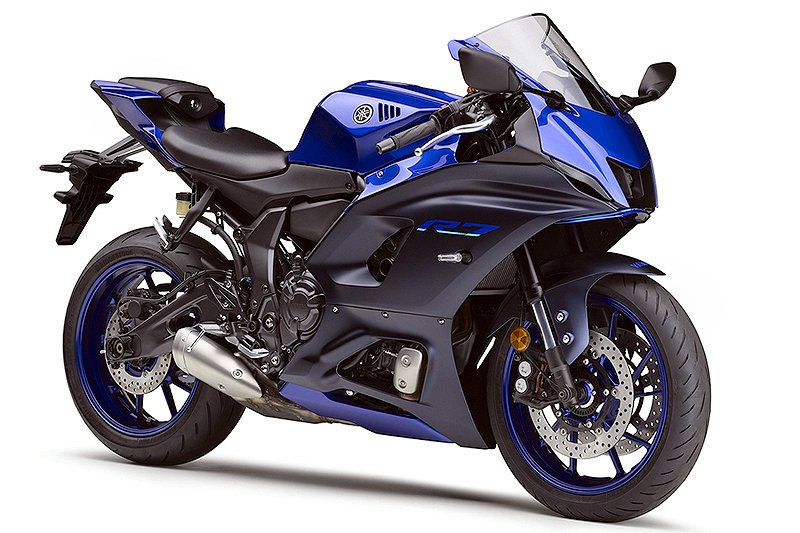
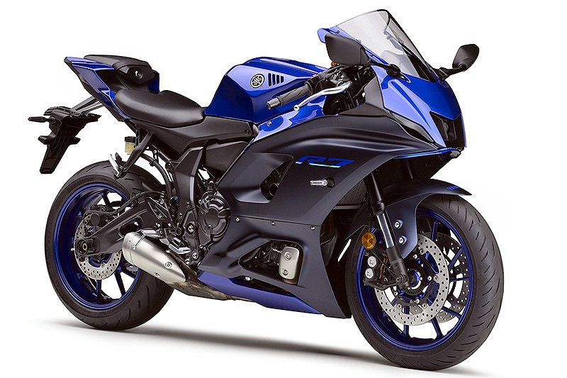

プログラムを学ぶようになった経緯ですが,部署内の帳票類を電子化することで作業ロスを削減するためです。
- 目標
- 上長の検印をもらうための用紙の移動時間を削減する。
- 現状アナログの検印→検印を電子印に変更してExcelシート内のボタンをワンクリックするだけで同時に数十枚の帳票に押印される。
- 用紙への記入をなくして用紙レスにする。Excelシートに直接入力してパソコン内にシートを保管して、ファイリング作業をゼロにする。
きっかけは会社の業務で興味を持ちプログラムを学ぼうと思いました。
プログラムを学ぶようになった経緯ですが,部署内の帳票類を電子化することで作業ロスを削減するためです。
 
